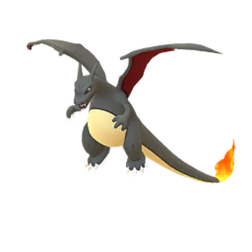
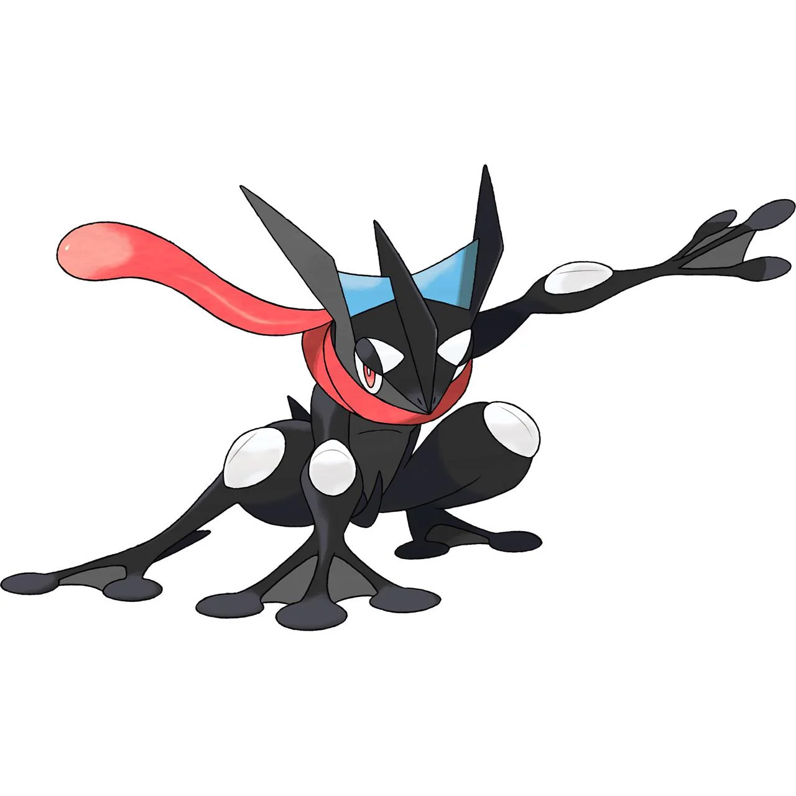
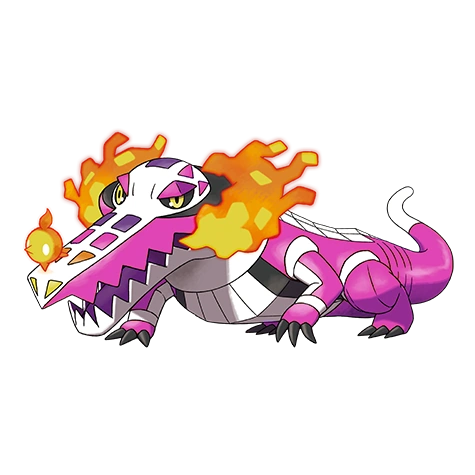

Top 10 Favorite Pokémon in Kanto
1. Snorlax
2. Charizard
3. Blastoise
4. Psyduck
5. Gengar
6. Onix
7. Alakazam
8. Gyarados
9. Dragonite
10. Nidoking

.
Top 10 Favorite Pokémon in Johto
1. Steelix
2. Umbreon
3. Tyranitar
4. Houndoom
5. Skarmory
6. Suicune
7. Kingdra
8. Scizor
9. Quagsire
10. Ampharos

.
Top 10 Favorite Pokémon in Hoenn
1. Metagross
2. Lotad
3. Wailord
4. Salamence
5. Flygon
6. Spheal
7. Sharpedo
8. Latios
9. Rayquaza
10. Aggron

.
Top 10 Favorite Pokémon in Sinnoh
1. Garchomp
2. Empoleon
3. Luxray
4. Lucario
5. Magnezone
6. Rhyperior
7. Mamoswine
8. Electivire
9. Gliscor
10. Togekiss

.
Top 10 Favorite Pokémon in Unova
1. Tepig
2. Chandelure
3. Klingklang
4. Golurk
5. Scolipede
6. Genesect
7. Cofagrigus
8. Vanillite
9. Haxorus
10. Gigalith

.
Top 10 Favorite Pokémon in Kalos
1. Pancham
2. Greninja
3. Aegislash
4. Tyrantrum
5. Hawlucha
6. Goodra
7. Trevenant
8. Talonflame
9. Sylveon
10. Volcanion

.
Top 10 Favorite Pokémon in Alola
1. Drampa
2. Golisopod
3. Vikavolt
4. Silvally
5. Type: Null
6. Mimikyu
7. Celesteela
8. Zeraora
9. Lunala
10. Solgaleo

.
Top 10 Favorite Pokémon in Galar
1. Falinks
2. Dragapult
3. Corviknight
4. Toxtricity
5. Grapploct
6. Zacian
7. Zamazenta
8. Coalossal
9. Cinderace
10. Urshifu

.
Top 10 Favorite Pokémon in Paldea
1. Skeledirge
2. Ceruledge
3. Annihilape
4. Miraidon
5. Garganacl
6. Armarouge
7. Bellibolt
8. Baxcalibur
9. Revavroom
10. Finizen

.
Top 10 Favorite Shiny Pokémon in Kanto
1. Charizard
2. Nidoking
3. Psyduck
4. Alakazam
5. Gyarados
6. Magikarp
7. Ponyta
8. Ditto
9. Mew
10. Lapras

.
Top 10 Favorite Shiny Pokémon in Johto
1. Umbreon
2. Houndoom
3. Mareep
4. Ampharos
5. Pupitar
6. Suicune
7. Gligar
8. Tyranitar
9. Quagsire
10. Politoed

.
Top 10 Favorite Shiny Pokémon in Hoenn
1. Metagross
2. Swampert
3. Sceptile
4. Gardevoir
5. Medicham
6. Rayqauza
7. Latias
8. Latios
9. Kyrogre
10. Salamence

.
Top 10 Favorite Shiny Pokémon in Sinnoh
1. Luxray
2. Gible
3. Gallade
4. Rotom
5. Giratina
6. Drifblim
7. Infernape
8. Toxicroak
9. Abomasnow
10. Gliscor

.
Top 10 Favorite Shiny Pokémon in Unova
1. Emboar
2. Oshawatt
3. Chandelre
4. Litwick
5. Klinklang
6. Vanillite
7. Scolipede
8. Gigalith
9. Cryoganal
10. Bisharp

.
Top 10 Favorite Shiny Pokémon in Kalos
1. Greninja
2. Delphox
3. Aegislash
4. Tyrantrum
5. Trevenant
6. Goodra
7. Trevenant
8. Volcanion
9. Sylveon
10. Hawlucha

.
Top 10 Favorite Shiny Pokémon in Alola
1. Drampa
2. Decidueye
3. Lycanroc
4. Alolan Marowak
5. Vikavolt
6. Palossand
7. Lunala
8. Jangmo-o
9. Primarina
10. Incineroar

.
Top 10 Favorite Shiny Pokémon in Galar
1. Obstagoon
2. Dragapult
3. Overqwil
4. Corviknight
5. Zacian
6. Zamazenta
7. Grimmsnarl
8. Grapploct
9. Toxtricity
10. Coalossal

.
Top 10 Favorite Shiny Pokémon in Paldea
1. Skeledirge
2. Klawf
3. Wugtrio
4. Finizen
5. Revavroom
6. Kingambit
7. Koraidon
8. Miraidon
9. Annihilape
10. Dipplin

Secret message.